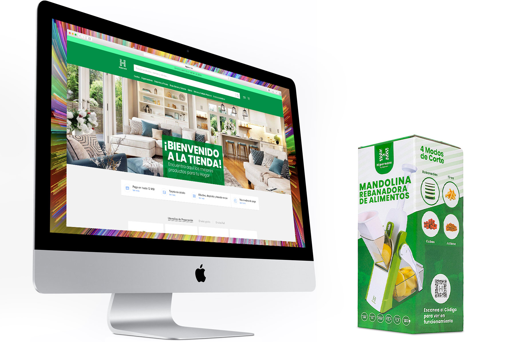
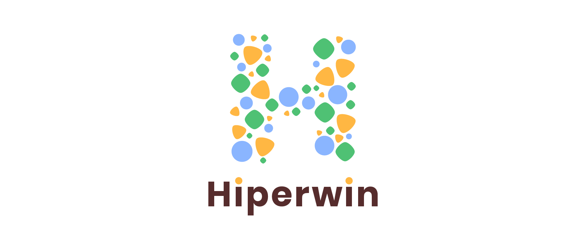
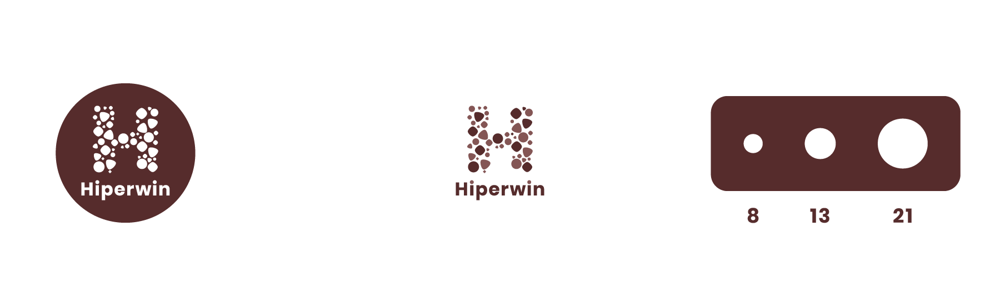
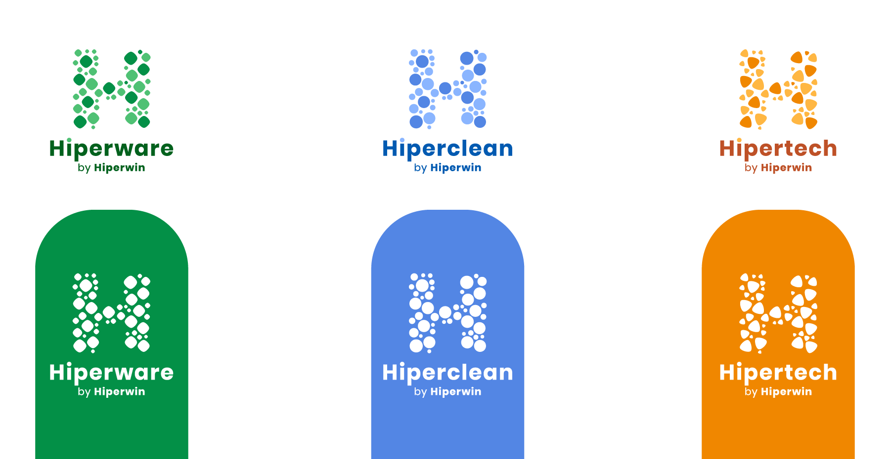
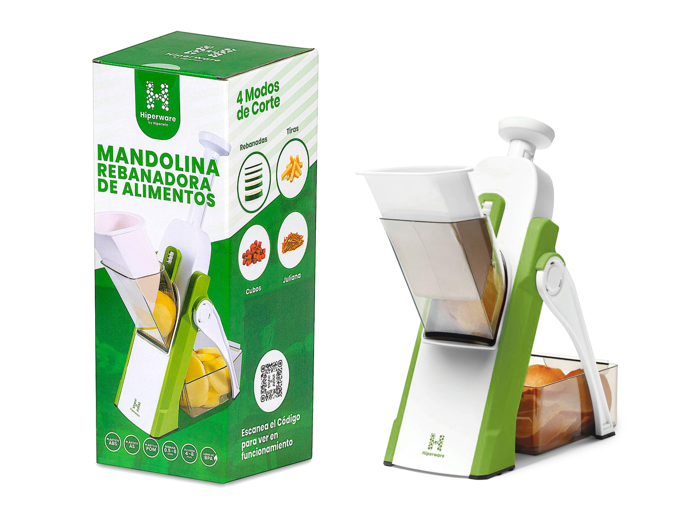
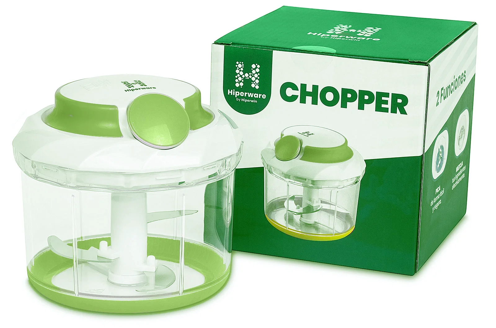
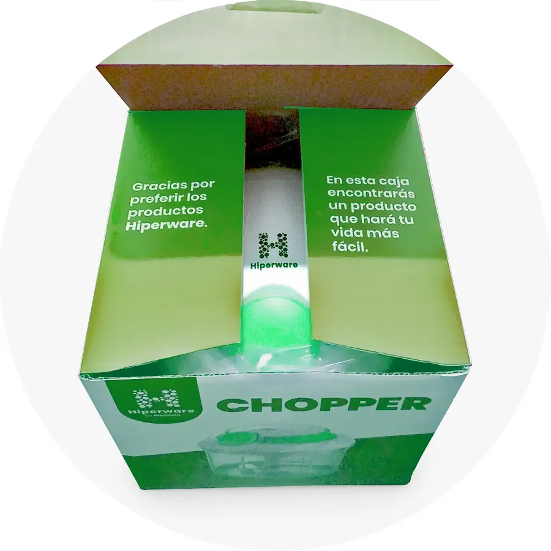
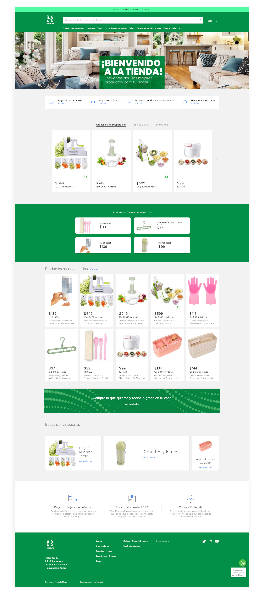
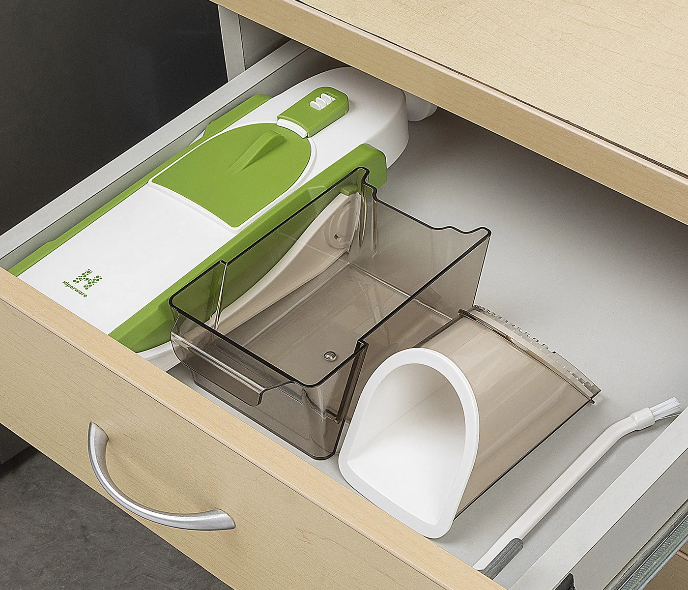

Hiperwin is a home appliance company with a diverse catalog that includes kitchen tools, cleaning products and consumer tech accessories. When I joined the project, the brand needed a complete identity system that could unify the company and its product lines while giving each category a clear visual personality.
I worked as the sole designer, responsible for building the brand from scratch, designing logos for the company and its three product lines, creating packaging for multiple items and then adapting the entire system to the online store.
This case study explains how the identity was constructed and how it evolved into printed and digital experiences that share the same visual DNA.
Brand Designer, Packaging Designer, UI Designer I created the company identity, designed the sub brand logos for each product category, executed all packaging and print materials and finally translated the system into the online store.
Hiperwin needed a brand that could grow. They were preparing to launch several product lines, each with different audiences and use cases. The company needed a unified identity that could support:
The visual system needed to give each line a distinct personality without losing the cohesion of a single brand family. The solution also had to work on printed packaging, product manuals and an ecommerce platform.

I started by designing the overarching Hiperwin company logo. The concept was built around geometric shapes that represented the product line families. Each sub brand would later be assigned a single shape. The company logo combined these shapes to symbolize unity across a diverse set of products.

Each sub brand needed a logo with its own character while still belonging to the overall identity. I designed the logos using one geometric shape per category:
This created a consistent and flexible system. Each product line had its own recognizable symbol, yet all of them tied directly back to the structure of the main Hiperwin logo.

I developed a palette that allowed each line to have a distinct color accent, but always within a shared tonal range so the family looked unified. The typography choices favored clarity and readability across large titles and small printed labels.
After finalizing the identity, I designed packaging for multiple products across the three lines. Each layout followed a modular system built around the logos and geometric shapes of the brand family.


Working on the packaging reaffirmed the strength of the geometric logo system. The shapes became visual anchors that made the product lines instantly recognizable.

With the printed ecosystem completed, the final step was to translate the brand into a functional online store. The digital experience had to feel aligned with the physical products, yet flexible enough to support growing inventory.
The online store carried forward the established rules:
This created a seamless experience where customers could identify each line at a glance, whether on a physical package or a product page.
I designed the ecommerce layout with a focus on:
The final interface felt cohesive and easy to navigate, guided by the same design decisions that shaped the packaging.

The project resulted in a complete visual ecosystem that included:
Being the sole designer allowed me to shape the entire identity from initial concept to final execution across print and web. The result is a brand with a strong visual foundation that can scale as the company grows.
